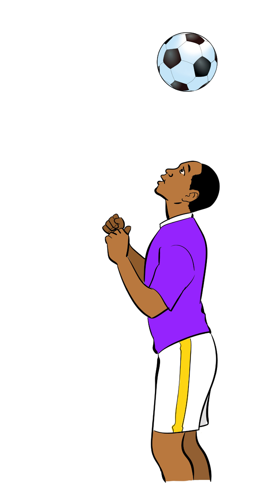

(v) Trap the ball using the forehead, just below the hairline, and
(vi) Drop the ball towards the comfortable area within a range of control.

Figure 4.6: Ball control by head
Passing
Passing refers to sending the ball accurately to a teammate. The aim of passing is to maintain possession of the ball so that the team can quickly attack or penetrate the ball to create opportunities for scoring the goal. Passes can be categorised into various ways based on a mode of execution, distance covered, flight of the ball and direction of the ball. In this section, only three basic types of passes by mode of execution, namely push pass, instep pass and heel pass are described.